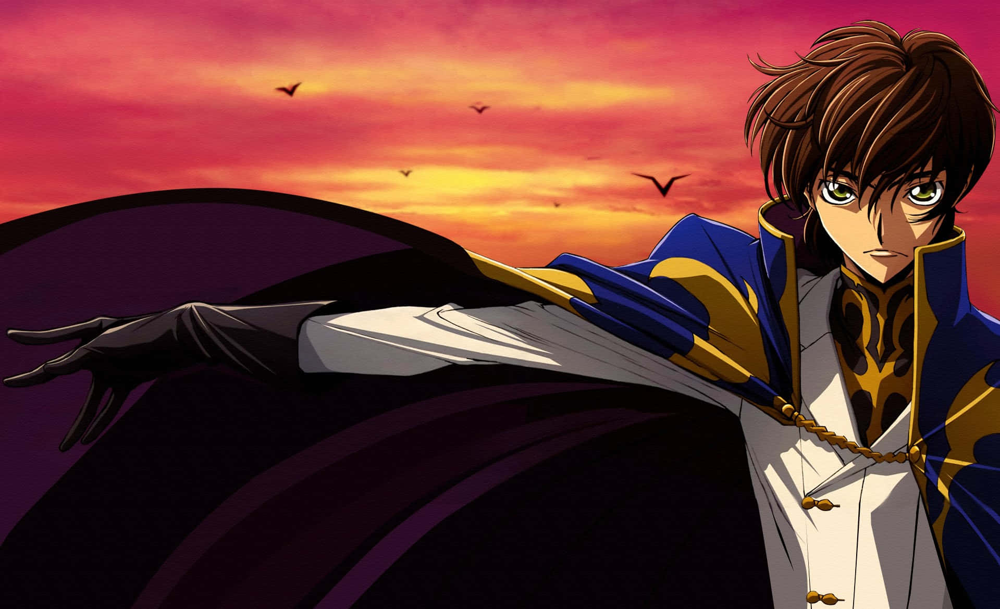
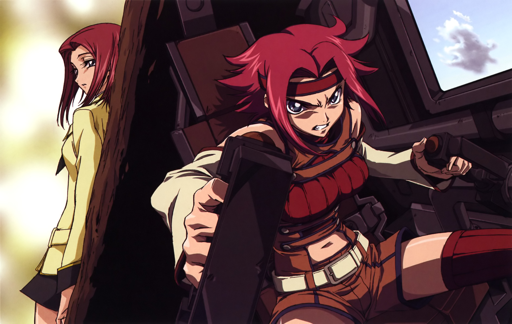

Para empezar, debemos tener en cuenta que algunas de las explicaciones pueden ser muy subjetivas y no implica directamente que, si usted intenta ver el anime le vaya a gustar. Por otro lado, téngase en cuenta que, a pesar de intentar no incluirlos, algunos de los argumentos podrían contener spoilers, así que por favor, leer a discreción.
A lo largo del anime podemos ver a Lelouch, nuestro protagonista, mostrar reacciones que una persona normal realmente debería tener en ciertas situaciones, las cuales, en el resto de animes, no se presentan o al menos no de una forma realista. En otras palabras, Lelouch tiene reacciones más "humanas" que el resto de protagonistas de la historia del anime. A pesar de no ser todos, algunos ejemplos de esto son:
| Protagonista | Inicios del anime | Finales del anime |
|---|---|---|
| Lelouch | Muestra remordimiento por sus asesinatos, incluso ser afectado por ellos. | Sufre cada pérdida, pero acepta sus errores como parte del proceso por el que tuvo que pasar para lograr sus objetivos y que forjaron quién es. |
| Light Yagami | No parece importarle sus asesinatos desde el primer momento, de hecho se emociona al ver que tiene el poder de hacerlo. | Está totalmente inmerso en sus asesinatos, incluso llegando a matar personas que amaba sin problema. |

Frase Icónica
¿Qué te pareció hasta ahora? Déjame tu comentario.